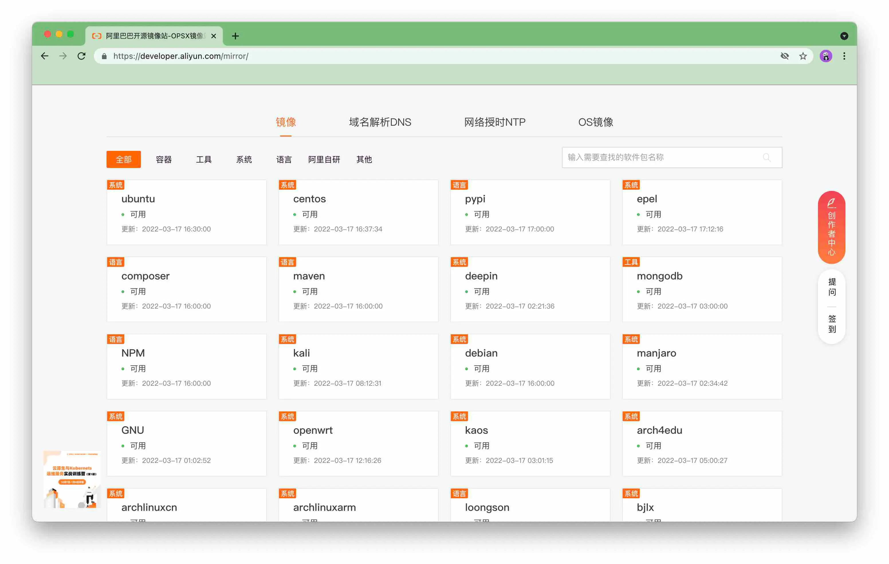
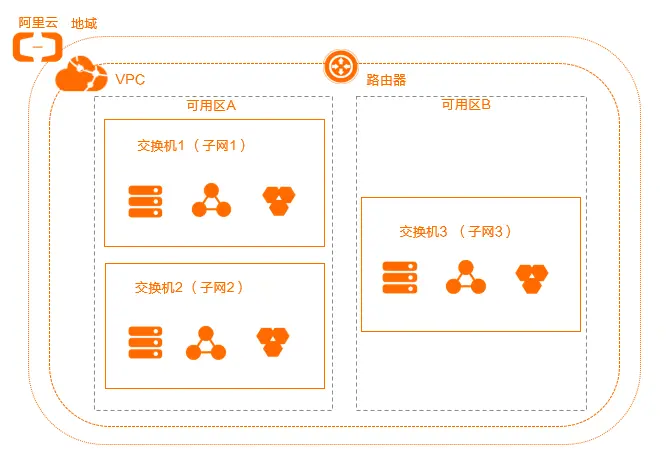
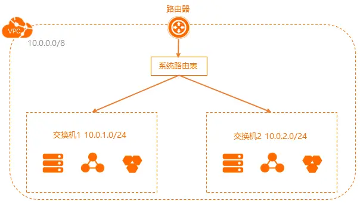
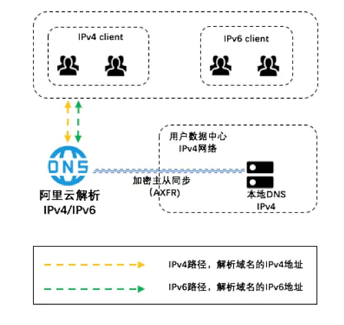
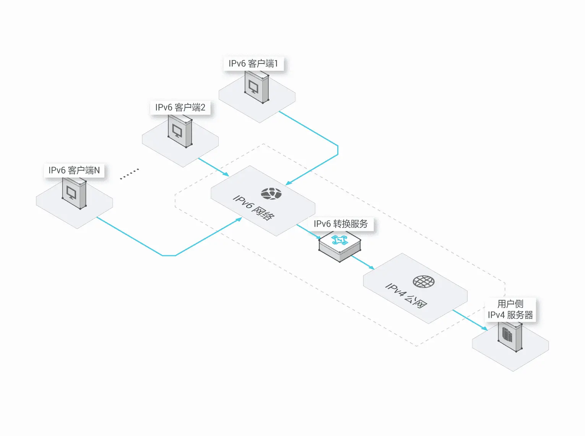
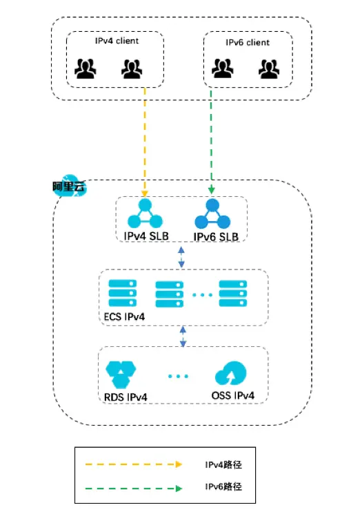
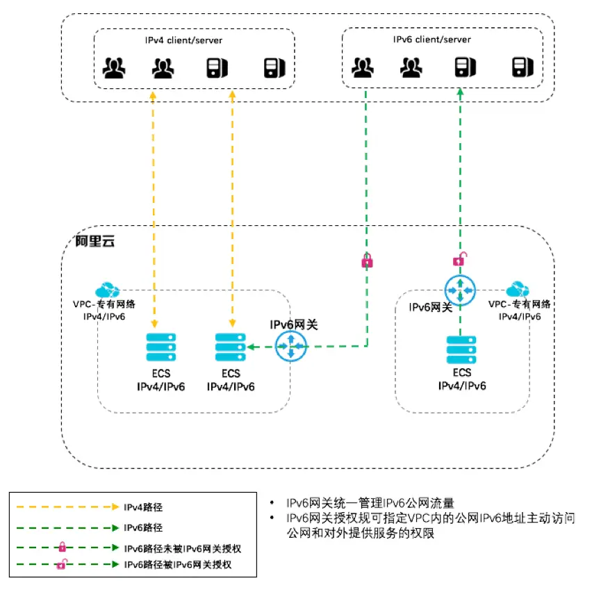
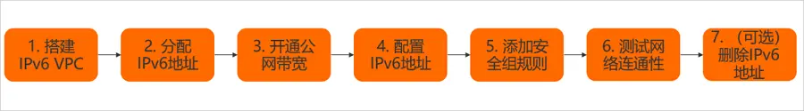

阿里云
AI 导读一分钟导读，先掌握全文主干。
核心观点
- VPC 与 ECS 双栈后分配 IPv6 地址，主动访问公网 IPv6 需配 IPv6 网关
- 覆盖开源 mirror、专有网络、邮箱默认开通与杂项
- ECS 高危漏洞处理与 vi 乱码修复等运维片段
关键结论与取舍
- IPv6 出公网必须过网关规则，别漏配置
- 文末 2024-2026 更新对齐云产品变化
开源mirror网址

阿里云专有网络
- 专有网络（VPC）是您独有的云上虚拟网络，可以将云资源部署在自定义的专有网络中。
- 云资源不能直接部署在专有网络本身，必须归属于专有网络内的某个交换机（子网）。
- 目前 IPv6 需在专有网络中手动开启（创建 VPC 时可选择双栈）


阿里云支持ipv6




阿里云ECS配置ipv6

-
VPC 与 ECS 支持双栈后，ECS 会分配到 IPv6 地址；若部署在 ECS 上的系统需要主动访问公网 IPv6 系统，需配合 IPv6 网关使用
-
开通IPv6网关后，通过配置IPv6网关规则，允许VPC内指定IPv6地址访问公网，则指定的IPv6 ECS就可以主动访问公网了
-
如不配置IPv6网关规则，默认ECS分配的IPv6地址只能在VPC内部通信
-
安全组规则中，源 "::/0" 表示允许 IPv6，源 "0.0.0.0/0" 表示允许 IPv4；要支持双栈，同一端口需开放两条规则
阿里云邮箱 默认开通
| 服务器名称 | 服务器地址 | 服务器端口号（非加密） | 服务器端口号（SSL加密） |
|---|---|---|---|
| POP3 | pop3.aliyun.com | 110 | 995 |
| SMTP | smtp.aliyun.com | 25 | 465 |
| IMAP | imap.aliyun.com | 143 | 993 |
subject（邮件主题）不能太随意，否则会被判为垃圾邮件而退信！ 发件邮箱最好加入白名单。
杂项
- 阿里云：云市场，买各种api接口
- 阿里云：云效代码托管，可快速导入其他 Git 仓库（GitHub/Gitee/自建 GitLab）
- 钉钉开放平台
- 弹性云手机——云端虚拟手机，可批量安装与测试 App
- 批量安装设置服务器
- 设置一台机器为种子，进行各种配置和安装
- 把种子机器导出为镜像
- 购买其他实例，选择从指定镜像初始化
- 号码隐私保护服务-真实号码绑定虚拟号码，其他人可用虚拟号码转到真实号码
阿里云ECS高危漏洞问题处理
# 升级系统及软件就能解决多数
yum -y upgrade服务器vi乱码
cd ~
vi .vimrc
set fileencodings=utf-8,ucs-bom,gb18030,gbk,gb2312,cp936
set termencoding=utf-8
set encoding=utf-8
set number
filetype on
syntax on阿里云更新（2024-2026）
阿里云主要变化：
- 通义千问（Qwen）：Qwen2.5（2024-09）之后 Qwen3 全面开源（Apache-2.0，支持混合推理），2026 年与 DeepSeek 并列为国产开源模型第一梯队；
- 百炼平台：Qwen 系列模型的托管 API 与 Agent 编排入口，已成为阿里云 AI 应用开发的默认起点；
- 通义灵码：AI 编程助手深度集成进 IDEA/VSCode 与云效流水线，写代码和 Code Review 的日常工具；
- 价格战：2024 年起大模型 API 多次大幅降价，Qwen 调用成本一年内降了一个数量级，老客户续费值得重新询价；
- PAI：机器学习平台，覆盖训练、部署与 MLOps，仍是 ToB 客户主力选择。